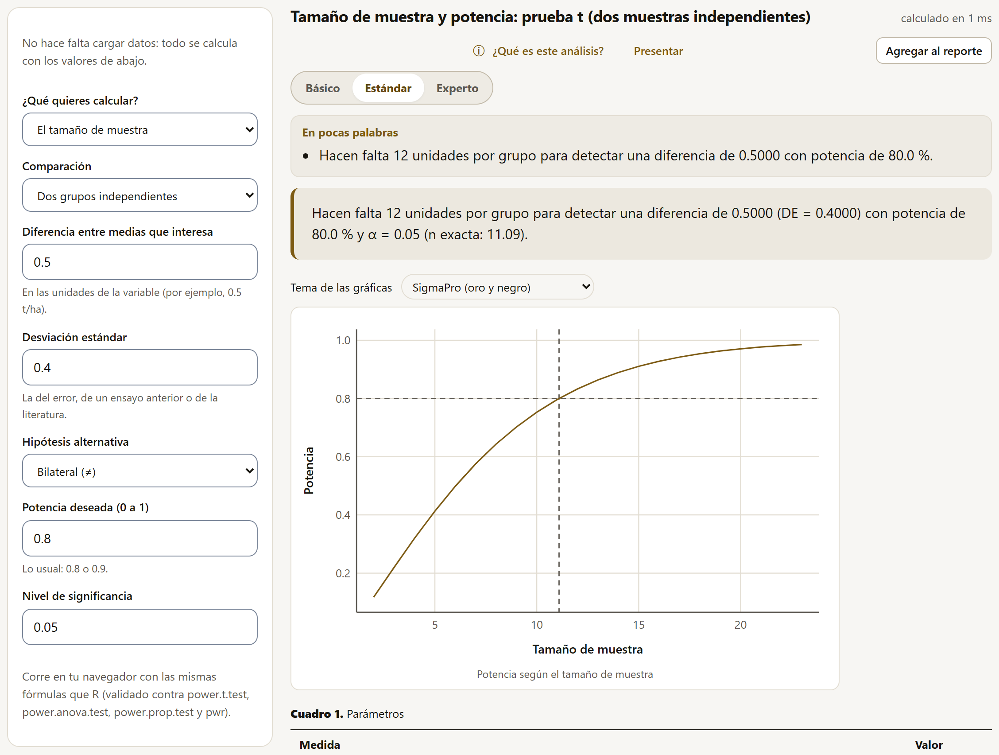

4.21Análisis multivariado
Cuando en cada unidad se miden varias variables a la vez (el largo, el ancho, el peso y la pared de un fruto), analizarlas una por una repite pruebas y desperdicia la relación entre ellas. La MANOVA prueba los tratamientos sobre el conjunto, y el análisis discriminante busca la combinación de variables que mejor separa los grupos. Los dos corren en el navegador, validados contra manova y lda de R.
MANOVA
Se eligen las Variables respuesta (de 2 a 10), los Factores de tratamiento (hasta 3, cruzados), los Bloques (opcional) y la Prueba principal: Pillai, la más robusta y la que se usa por omisión; Wilks; Hotelling-Lawley; o Roy, que da una cota superior de F y un p optimista. El cuadro principal trae las cuatro.
Con cuatro variedades de chile en tres bloques, cinco frutos por parcela, la variedad cambia el conjunto de las cuatro medidas (Pillai = 2.668, F(12, 159) = 106.40, p < 0.001). El bloque queda en el límite: Pillai da p = 0.063, y Roy, con su p optimista, 0.005; por eso conviene decidir con la prueba principal y no con la más favorable. El semáforo revisa que haya suficientes grados de libertad del error para el número de respuestas (54 para 4) y la igualdad de las matrices de covarianza con la prueba M de Box (χ²(30) = 30.13, p = 0.459). Los otros cuadros dan el ANOVA de cada respuesta por separado y las medias; la gráfica muestra el perfil de las medias estandarizadas. Dos botones bajan las variables con su grupo en CSV para abrirlas en PCAPro (componentes principales) o en ClusteringPro (conglomerados), las apps de la suite para esos análisis.
Análisis discriminante lineal
Se eligen los Grupos que se quieren separar y las Variables que los describen (de 2 a 15). El resultado da las funciones discriminantes con la proporción de la separación que explica cada una, sus coeficientes, los centroides de los grupos y la clasificación con validación cruzada: cada unidad se clasifica con la función ajustada sin ella, lo que da una tasa de acierto honesta (la que usa los mismos datos del ajuste es optimista).

Con los chiles hay tres funciones; la primera explica el 66.8 % de la separación y la segunda el 28.9 %. Con validación cruzada, los 60 frutos quedan en su variedad (100 %).
Los coeficientes no están estandarizados: solo se comparan entre variables de escalas parecidas. La app lo advierte al nombrar las variables de más peso en la primera función.
4.22Potencia, repeticiones y muestreo
Antes del ensayo: cuántas repeticiones, cuántas plantas o cuántas semillas hacen falta para detectar una diferencia que importa o para estimar con el error que se acepta. Seis de los ocho métodos de la familia no necesitan datos; con la hoja vacía se abren desde Explorar, con Calcular un tamaño de muestra o una potencia, y con datos cargados están en el catálogo como cualquier otro.
Los cálculos de potencia preguntan ¿Qué quieres calcular?: el tamaño de muestra, la potencia de un tamaño dado o la diferencia que se puede detectar. Usan las mismas fórmulas que R (power.t.test, power.anova.test, power.prop.test y pwr) y dibujan la potencia según el tamaño de muestra.

| Método | Con | Resultado |
|---|---|---|
| Medias (prueba t) | Diferencia 0.5, DE 0.4, potencia 0.8 | 12 unidades por grupo (11.09) |
| ANOVA de varios tratamientos | Medias 4.2, 4.8, 5.1 y 5.6; DE del error 0.6 | 5 repeticiones por tratamiento (4.915) |
| Dos proporciones | 65 % contra 80 % | 138 unidades por grupo (137.9) |
| Correlación | 40 pares, potencia 0.8 | Se detecta una correlación de 0.4265 |
| Repeticiones de un experimento | CV 12 %, diferencia de 15 % de la media, 6 tratamientos en bloques | 11 repeticiones |
| Tamaño de muestra para estimar | Proporción 0.3 con error ± 0.05, población de 900 | 238 unidades (323 sin la población finita) |
Las repeticiones de un experimento usan la fórmula de Cochran y Cox (1957), con el CV de ensayos anteriores y la diferencia en porcentaje de la media; los grados de libertad del error dependen de las repeticiones, así que la app las busca hasta que la fórmula se cumple y lo muestra en una gráfica. El tamaño de muestra para estimar una media o una proporción usa las fórmulas de Cochran (1977), con la corrección por población finita cuando se da su tamaño.
Estimar con una muestra
Los otros dos métodos analizan una muestra ya tomada. El muestreo aleatorio simple estima la media (o la proporción, si la columna es 0/1) y, con el tamaño de la población, el total, con la corrección por población finita. El muestreo estratificado pide además los estratos y el tamaño de la población de cada uno (Nh), y con un tamaño total propone cómo repartir una muestra nueva: proporcional y de Neyman.
Con el aguacate de tres huertas (1580 árboles), la estimación simple da una media de 51.89 kg por árbol (EE = 1.975) y la estratificada 54.32, con un error estándar bastante menor (1.142). La diferencia tiene explicación: la muestra tomó 16 árboles de la Planicie, que tiene el 57 % de los árboles y los más productivos, y 20 de las otras dos huertas, que tienen el 43 %; la estimación simple los pesa igual y se va hacia abajo, la estratificada pesa cada huerta por su tamaño. Para una muestra nueva de 60, Neyman toma 17 en la Ladera, 29 en la Planicie y 16 en la Vega: más en los estratos grandes y en los variables.
4.23Análisis de supervivencia
Cuando la respuesta es el tiempo hasta que algo ocurre (germinar, florecer, morir) y en algunas unidades no ocurrió antes de terminar el ensayo, esas unidades están censuradas: se sabe que su tiempo es mayor que el observado, pero no cuánto. Promediar los días sin ellas, o con ellas como si hubieran germinado el último día, sesga el resultado; el análisis de supervivencia las usa correctamente. Los dos métodos se validaron contra el paquete survival de R.
Ambos piden el Tiempo hasta el evento (o hasta la censura) y el Evento (1 si ocurrió, 0 si la unidad terminó sin él o se perdió). Los Estratos (opcional: lotes, sitios, fechas) dan a cada estrato su propio riesgo base, y los grupos se comparan dentro de ellos.
Curvas de Kaplan-Meier

Con 120 semillas de frijol en tres tratamientos, revisadas cada día hasta el día 21, la mediana de los días a germinar es 17 en el testigo, 5.5 con remojo y 4 con escarificación, y las curvas difieren (log-rank χ²(2) = 37.89, p < 0.001). 17 semillas (14.2 %) no germinaron: están censuradas.
La línea discontinua marca el 0.5: donde la cruza cada curva está su mediana.
Las opciones son el Intervalo de la curva (log, el de survival; log-log; o lineal) y la Prueba para comparar las curvas: log-rank, con el mismo peso a todos los tiempos, o Peto-Peto, que pesa más los tiempos tempranos. Los cuadros dan la mediana y los cuartiles de cada grupo con su intervalo, la tabla de la prueba (eventos observados contra esperados) y la tabla de supervivencia en cada tiempo con eventos.
Modelo de Cox
El modelo de riesgos proporcionales de Cox mide el efecto de los Factores y de las Covariables numéricas sobre el riesgo instantáneo del evento, como una razón de riesgos (HR): mayor que 1, el evento llega antes. Los Tiempos empatados se tratan con Efron (el de survival, mejor con días enteros) o con Breslow.
Con el frijol, el tratamiento y el peso de la semilla, estratificado por lote: la escarificación multiplica el riesgo de germinar por 4.459 (IC 95 %: 2.628 a 7.568) y el remojo por 2.096, frente al testigo. El HR del peso es 0.02058 por gramo; como las semillas pesan alrededor de 0.4 g, conviene leerlo por décima de gramo: 0.020580.1 = 0.678, un tercio menos de riesgo por cada 0.1 g más. El semáforo revisa la proporcionalidad de los riesgos (como cox.zph: p = 0.753, sin evidencia de que los efectos cambien con el tiempo) y que haya al menos 10 eventos por coeficiente (aquí, 34). Los cuadros incluyen las tres pruebas globales y la concordancia C de Harrell (0.690).
4.24Series de tiempo
Una serie de tiempo es una variable medida a intervalos iguales (cada mes, cada semana, cada año), donde los valores cercanos se parecen. Los cuatro métodos piden la Variable medida en el tiempo y la Columna del tiempo que ordena las filas, y se validaron contra R (acf, decompose, arima y el paquete trend). El ejemplo es una estación meteorológica con la lluvia y la temperatura de cada mes de 2017 a 2024.
- Autocorrelación: la ACF y la PACF con su banda, y las pruebas de Ljung-Box y Box-Pierce. La lluvia mensual está muy autocorrelacionada (Ljung-Box Q(12) = 427.37, p < 0.001), con el ciclo anual a la vista: positiva a 1 mes, negativa a 6.
- Descomposición: separa la tendencia (media móvil de un ciclo), el componente estacional y el residuo, aditiva o multiplicativa, con la frecuencia del ciclo (12 para meses). En la temperatura, la estacionalidad explica el 96.01 % de la variación sin tendencia.
- Tendencia monótona: la prueba de Mann-Kendall (no supone normalidad) y la pendiente de Sen, resistente a valores extremos. La temperatura no muestra tendencia en los ocho años (τ = 0.058, p = 0.403).
ARIMA y pronóstico
El modelo ARIMA describe la serie con sus valores pasados (autorregresivos, p), sus errores pasados (medias móviles, q) y las diferencias que la vuelven estable (d), con su versión estacional (P, D, Q y el periodo). El Orden del modelo se escribe, o se pide Buscar el de menor AIC (p, q de 0 a 2 y P, Q de 0 a 1, con las diferencias que se pongan), y se eligen los Pasos a pronosticar.

Con la lluvia, el ARIMA(1, 0, 0)(0, 1, 1)12 deja residuos sin autocorrelación (Ljung-Box Q(22) = 15.46, p = 0.842): el semáforo en verde. El pronóstico repite el pico del verano, cerca de 157 mm.
Los límites inferiores de algunos meses secos son negativos (−10.33 mm en el primero): el modelo no sabe que la lluvia no baja de cero. Para respetarlo, conviene modelar una transformación de la variable (sección 2.9).